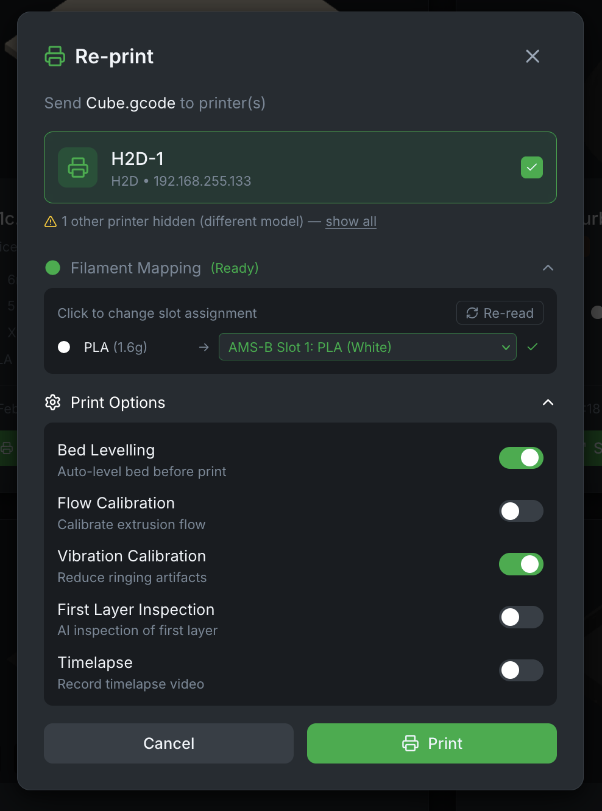
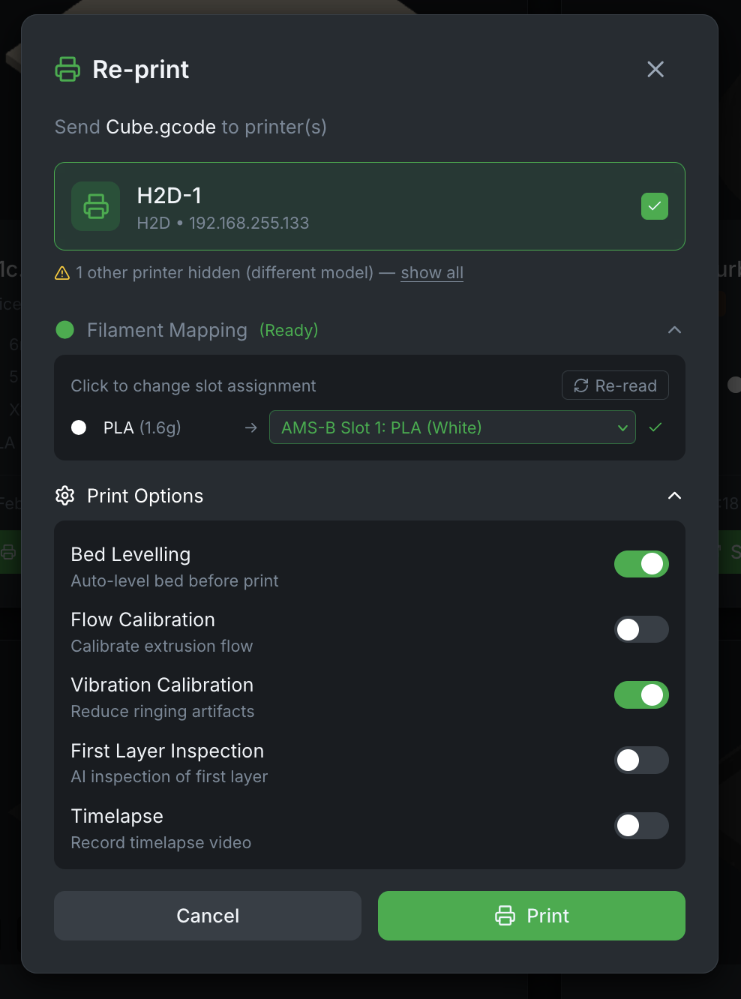

Maintenance Tracking
Keep your printers in top condition with scheduled maintenance reminders.
-
Interval-Based Reminders
Set reminders based on print hours or calendar days.
-
Per-Printer Tracking
Independent maintenance schedules for each printer in your fleet.
-
Custom Maintenance Types
Define your own maintenance tasks with custom icons and intervals.
-
Overdue Alerts
Visual indicators and notifications when maintenance is due.
-
Firmware Update Helper
Check and upload firmware updates for LAN-only printers directly to SD card.
-
Support Bundle Generator
Enable debug logging and download sanitized logs for issue reporting. Sensitive data (IPs, emails, passwords) automatically filtered.